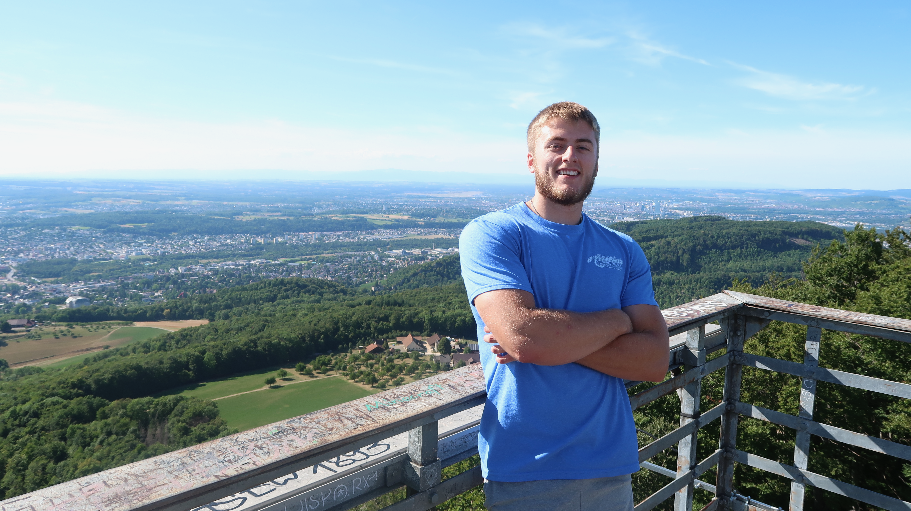

About Me

-
I am a software developer and technology professional with a passion for problems solving, creative building, and meaningful solutions. I enjoy working across the full stack — from crafting new user interfaces to designing systems that drive performance and improvement.
-
I earned my Bachelor's degree in Computer Science from Marshall University, where I developed a strong foundation in programming, algorithms, and system design. During my time there, I gained hands-on experience through IT and software development internships, where I worked on projects that strengthened my understanding of real-world problem solving, team collaboration, and the importance of writing maintainable code.
-
Currently, I work as a Telecommunications Technician at Southern Ohio Medical Center, where I combine my technical expertise and analytical skills to support and optimize critical communication systems. This role has further deepened my appreciation for reliable infrastructure, cybersecurity, and the intersection between software and network technologies.
-
Whether I am developing a new application, troubleshooting a system, or collaborating with others to improve workflows, I approach each challenge with curiosity and a problem-solving mindset. I am continually striving to grow as a developer and technologist — learning new tools, exploring innovative solutions, and building technology that makes a difference.